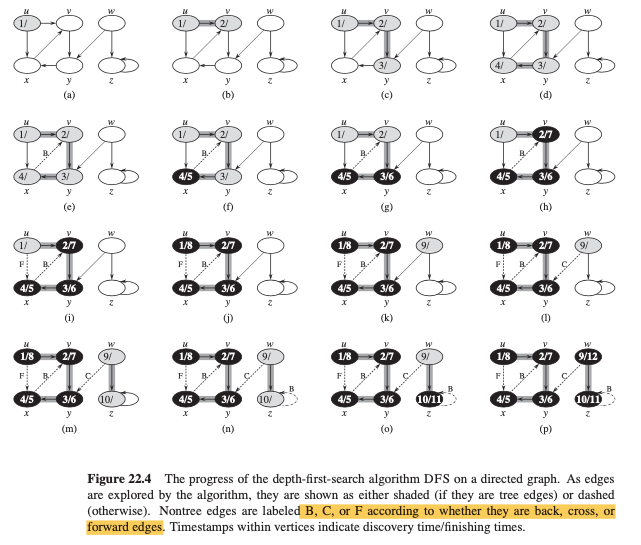

Lecture 10: Depth-First Search
Contents
Lecture 10: Depth-First Search¶
Overview¶
search
deeperwherever possiblesolve single source reacheability, not shortest path problem. Will be useful for solving other problems (later at XXX).
return parent tree or forest (e.g., multiple trees)
DFS¶
could run from a single source or multiple source
As in breadth-first search, depth-first search colors vertices during the search to indicate their state. Each vertex is initially white, is grayed when it is discovered in the search, and is blackened when it is finished, that is, when its adjacency list has been examined completely. This technique guarantees that each vertex ends up in exactly one depth-first tree, so that these trees are disjoint.
Besides creating a depth-first forest, depth-first search also timestamps each vertex.
Each vertex
vhas two timestamps: the first timestampv.drecords whenvis first discovered (and grayed), and the second timestampv.frecords when the search finishes examiningv’s adjacency list (and blackensv).The timestamps provide important information about the structure of the graph and are generally helpful in reasoning about the behavior of DFS
The timestamps are integers between
1and2|V|.For each
v, \(v.d < v.f\).
algorithm:
DFS(G,s)initialize global time stamp
mark the source vertice as gray, being explored
for vertex
vin the adjacency list ofs, if not explored yet, runDFS(G,v)recursivelymark source verice as black, finishing exploration
update time stamp by 1
assign final timestamp for source vertex
examples

def DFS_source(G,s): # An implementation of DFS for a single source
for u in G.V: # Initialize search algorithm
u.color = WHITE
u.p = NIL
global time = 0 # Global time stamp. This should be set on the top level if DFS(G) calls DFS_single(G.s) to traverse all the vertice in G
s.color = GRAY
s.p = NIL
s.d = time
for v in G.Adj[s]: # Recursively explore unexplored adajacent vertex
if v.color == WHITE:
v.p = s
DFS(G,v)
s.color = BLACK # Mark as done for exploration
time = time + 1
s.f = time # Record final time for vertex
DFS Tree Edges:
Type:
tree edges: edge (u, v) that
vwas first discovered by exploring edge(u,v).back edges: edges (u,v) that connect with a vertex
uto anancestorvin a depth-first treeforward edges: edges (u,v) that connect with a vertex
uto andescendantvin a depth-first treecross edeges: They can go between vertices in the same depth-first tree, as long as one vertex is not an ancestor of the other, or they can go between vertices in different depth-first trees.
Colors:
WHITE: indicate a tree edge
GRAY: indicates a back edge
BLACK: indicates a foward or cross edge
In a depth-first search of an undirected graph G, every edge of G is either a tree edge or a back edge.
Topological Sort¶
A topological sort of a
directed acyclic graph\(G = (V, E)\) is a linear ordering of all its vertices such that if G contains an edge (u, v) then u appears before v in the ordering.If the graph contains a cycle, then no linear ordering is possible.
We can view a topological sort of a graph as an ordering of its vertices along a horizontal line so that all directed edges go from left to right.
def topological_sort(G): call DFS(G) to compute finishing time v.f for each vertex v as each vertex is finished, insert it onto the front of a linked list return the linked list of vertices